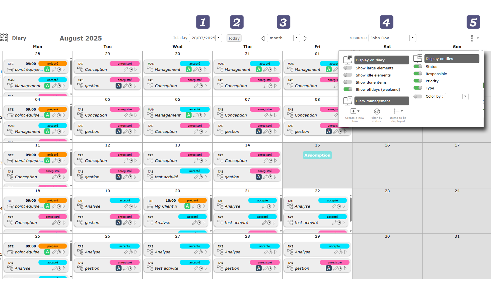
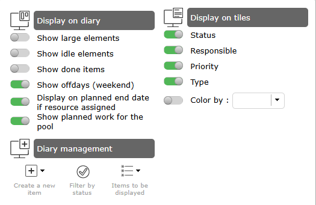
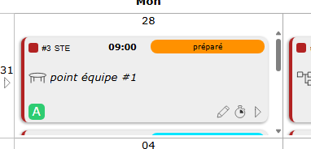
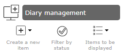
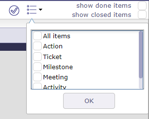
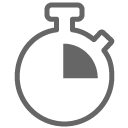
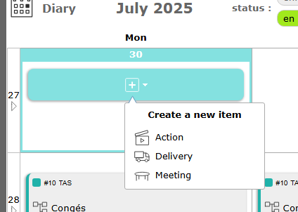
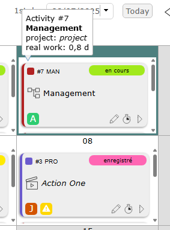
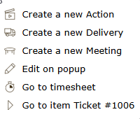

Journal¶
Le calendrier vous permet de visualiser les tâches planifiées d’une ressource dans une vue similaire à un calendrier.
Cette vue peut être quotidienne, hebdomadaire ou mensuelle, et les tuiles peuvent être personnalisées.

Calendrier du journal¶
Options d’affichage¶
Premier jour
Affiche une date spécifique.
Le premier jour de la semaine ou du mois est affiché selon la vue sélectionnée (hebdomadaire, mensuelle).
Bouton Aujourd’hui
Cliquez sur le bouton aujourd’hui pour accéder à la date d’aujourd’hui.
Format d’affichage
Choisissez parmi 3 modes d’affichage différents : mensuel, hebdomadaire ou quotidien
Mois
Vous permet de voir le mois complet (1 à 31).
Semaine
Vous permet de voir les 5 jours de la semaine avec ou sans jours de congé. Lundi au vendredi avec affichage des heures.
Jour
Vous permet de voir la journée complète avec les heures.
Vous pouvez également modifier cet affichage en cliquant sur les bords des cases jour.
Cliquez sur la flèche à gauche de la case pour afficher la semaine.
Cliquez sur le numéro du jour pour afficher uniquement la journée complète.

Flèche pour changer le format d’affichage du calendrier¶
Ressource
La liste déroulante des ressources vous permet de sélectionner la ressource de votre choix pour voir son calendrier.
Vous devez avoir des droits de visibilité sur les ressources ; sinon, vous ne verrez que votre nom.
Ce champ est en lecture seule si vous n’avez pas de droits de visibilité sur les autres ressources.
Options du journal¶

Options du journal¶
Affichage sur le journal¶
Afficher les grands éléments
Passez d’une « tuile » standard à une tuile plus large qui s’adapte à la hauteur du carré et qui permet d’afficher plus d’informations.

Grand élément sur le journal¶
Lorsque la vue « Grand élément » est sélectionnée, une nouvelle option apparaît vous permettant d’afficher la charge de travail sur l’élément.
C’est l’option « afficher le travail sur l’élément »

Nouvelle option avec grand élément¶
Voir aussi
Afficher les éléments inactifs
Comme sur tout écran ProjeQtOr, vous avez la possibilité d’afficher les éléments clos.
Afficher les éléments terminés
De la même manière, vous avez la possibilité d’afficher les éléments déjà terminés, c’est-à-dire dans un statut « terminé ».
Afficher les jours de congé (week-end)
Afficher ou non les jours non ouvrés

Vue du journal sans jours non ouvrés le week-end¶
Afficher le travail sur l’élément

Afficher le travail sur l’élément¶
Gestion du journal¶

Gestion du journal¶
Dans une case, cliquez sur
 pour créer un nouvel élément.
pour créer un nouvel élément.Cliquez sur pour afficher le statut et filtrer les éléments.
{kind=link}

Filtres de statut¶
Cliquez sur
 pour afficher uniquement certains éléments sur le calendrier comme les activités, les réunions, les actions, les tickets…
pour afficher uniquement certains éléments sur le calendrier comme les activités, les réunions, les actions, les tickets…

Affichage sur les tuiles et cases¶
Les tuiles sont personnalisables et vous pouvez choisir quelles informations voir directement sur la tuile.

Options d’affichage sur les tuiles¶
Vous pouvez afficher :
le statut,
le responsable,
la priorité de l’élément,
le type,
la version du produit liée,
l’activité de planification/parent liée
le nom du projet et sa couleur.
Certains éléments ne sont visibles que sur les grandes tuiles.
Cliquez sur
 pour ouvrir la fenêtre contextuelle correspondant à l’élément sélectionné.
pour ouvrir la fenêtre contextuelle correspondant à l’élément sélectionné.Cliquez sur

pour ouvrir directement l’écran de feuille de temps avec la ligne de l’élément sélectionné et le jour actuel.Cliquez sur
 pour ouvrir l’élément sur son écran dédié.
pour ouvrir l’élément sur son écran dédié.
{kind=link}
Créer un élément sur une case¶
Vous pouvez ajouter certains éléments directement depuis le calendrier.
Survolez une case pour voir apparaître le bouton de création.
Cela fonctionne également les jours de congé.

Nouvel élément¶
Éléments du journal¶
Chaque élément auquel la ressource est affectée est affiché dans son journal.
Tous les types de congés et de livraisons sont également affichés.
La couleur qui apparaît sur les objets est celle du projet auquel ils sont attachés.

Le clic droit sur un élément permet d’afficher le menu contextuel.
Plusieurs actions sont proposées.
